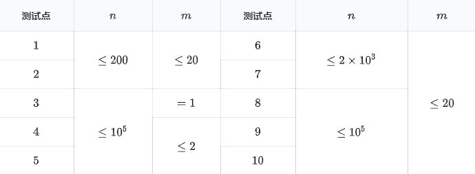

【样例说明】
当 $x = 1$ 时，三个人的表现分别为 $6, 6, 4$，这时前两个人并列第一名，都能进入省队，而第三个人排名第三，没法进入省队。
当 $x > 1$ 时，第二个人的表现严格好于第三个人，而当 $x = 0$ 时，第一个人的表现严格好于第三个人，因此第三个人无论 $x$ 怎么取，他都没有办法进入省队。
【数据范围与提示】

对于 $100\%$ 的数据，$1 \le a_i \le 10^9, 1 \le b_i \le 10^{18}$，$1 \le m \le n$。
对于 $100\%$ 的数据，保证选手的属性两两不同，即 $\forall 1 \le i < j \le n$，有 $a_i\neq a_j$ 或 $b_i\neq b_j$。
 Comet OJ
Comet OJ